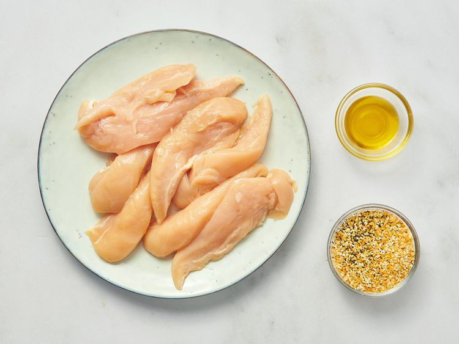
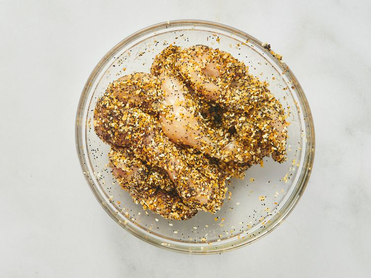
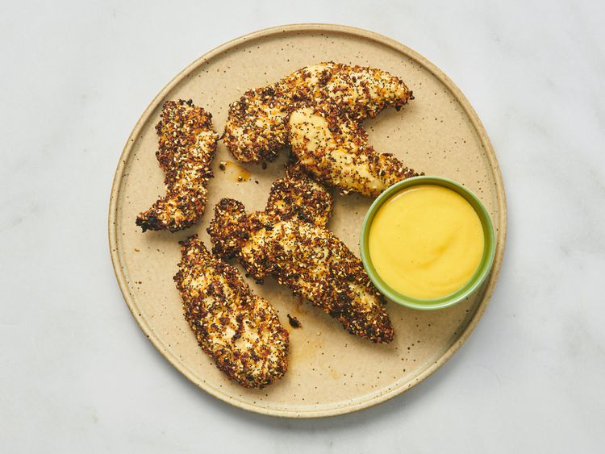

These 3-ingredient air fryer everything bagel chicken strips are simple, flavorful, and delicious. Chicken tenders are easy to cook, but this easy? Wow! 5 minutes of prep time, 3 ingredients,
and a quick fry in the air fryer, and dinner is ready in well under half an hour. My go-to dipping sauces are ranch dressing, brown gravy, or tartar sauce made with dill relish.
Gather all ingredients. Preheat an air fryer to 400 degrees F (200 degrees C), or according to manufacturer’s instructions.
Place tenders in a bowl. Add oil and toss to coat. Add everything seasoning and toss to coat again.
Place tenders in the air fryer basket in a single layer; cook in batches if necessary. Cook until no longer pink at the center and juices run clear, about 12 minutes.
An instant read thermometer inserted near the center should read at least 165 degrees F (74 degrees C).
Transfer to a serving plate and serve with desired dipping sauce.
Source Allrecipes